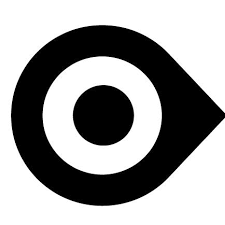

OrCam Read 3
La solución para una lectura más fácil y accesible
OrCam Read 3 es un dispositivo portátil e innovador, diseñado para personas con visión reducida de leve a moderada, así como para quienes enfrentan dificultades en la lectura, como la dislexia o la fatiga visual. Este dispositivo ligero y fácil de usar incorpora una cámara inteligente que permite leer en voz alta cualquier texto, ya sea en superficies impresas o en pantallas digitales. Con OrCam Read, puede disfrutar de la lectura de periódicos, libros y hasta el contenido en la pantalla de su ordenador o teléfono, sin necesidad de asistencia. Es ideal para mejorar el tiempo de estudio, facilitar el trabajo y disfrutar de la lectura de manera más cómoda y privada.
La historia de OrCam comenzó en 2015 con el lanzamiento de OrCam MyEye, un dispositivo diseñado para ayudar a personas ciegas o con deficiencia visual. Este dispositivo, que se sujeta a las gafas, permite a los usuarios leer en tiempo real y reconocer rostros a través de una cámara que convierte la información visual en audio sin necesidad de conexión a internet. Con una autonomía de un día, puede almacenar hasta 100 caras y 150 productos.
En 2018, OrCam presentó OrCam MyEye 2.0, que introdujo el control por voz, permitiendo un uso manos libres. Este modelo es capaz de leer textos de diversas superficies y ofrece funciones de reconocimiento de rostros y productos, manteniendo su diseño portátil y discreto. En 2020, OrCam lanzó OrCam Read, enfocado en personas con visión leve a moderada y dificultades de lectura, como la dislexia. Este dispositivo ligero captura páginas completas en lugar de palabras individuales, facilitando la lectura de grandes cantidades de texto, y también se activa mediante comandos de voz.
En 2023, OrCam introdujo OrCam Learn, diseñado para apoyar a quienes enfrentan desafíos en la lectura y el aprendizaje. Permite escuchar textos de cualquier superficie y ofrece tres modos de lectura: palabra única, párrafo y página completa. Este dispositivo busca mejorar la concentración y el compromiso con el material de lectura. Ese mismo año, también se lanzó OrCam Read 3, una solución todo en uno que actúa como un lector portátil y una lupa personalizada. Permite leer instantáneamente texto impreso o digital y cuenta con un soporte que lo convierte en un lector estacionario. Además, ofrece opciones de ampliación de texto y personalización de contraste, controlables mediante comandos de voz y gestos intuitivos.
Actualmente, en su página web, OrCam ofrece para la venta OrCam Read, OrCam MyEye 2.0 y OrCam Read 3, reflejando su compromiso continuo con la innovación en tecnología asistiva. A lo largo de los años, OrCam ha evolucionado su tecnología, mejorando la calidad de vida de las personas con discapacidades visuales y brindándoles la independencia necesaria para enfrentar su día a día.
A continuación, se presenta un cuadro de especificaciones detalladas del OrCam Read 3. Este dispositivo ha sido diseñado para ofrecer soluciones avanzadas a las necesidades de lectura de personas con visión reducida y dificultades en la lectura. Las especificaciones reflejan las capacidades y funcionalidades que permiten a los usuarios disfrutar de una experiencia de lectura accesible y personalizada.br
| Especificaciones | Detalles |
|---|---|
| Nombre del Producto | OrCam Read 3 |
| Tipo de Dispositivo | Dispositivo portátil y de mano |
| Asistente de IA | Función de asistencia con comandos de voz |
| Comandos de Voz | Activación mediante comandos de voz para diversas funciones |
| Funciones de Lectura | Lectura de textos impresos y digitales, reconocimiento de escritura a mano |
| Resumen de Texto | Capacidad para resumir textos en temas principales |
| Extracción de Texto | Extrae y copia texto de imágenes y documentos |
| Conversión de Texto | Convierte texto de imágenes a texto digital |
| Conectividad | Conexión a cualquier pantalla a través de Wi-Fi y Bluetooth |
| Idiomas Soportados | Soporta más de 140 idiomas |
| Zoom | Función de acercar y alejar el texto |
| Cambio de Contraste | Posibilidad de cambiar el contraste para facilitar la lectura |
| Lectura Inteligente | Permite buscar y saltar a palabras específicas o contenido de interés |
| Luz de Lectura | Incluye luz de lectura para mejorar la visibilidad |
| Funcionamiento Offline | Funciona sin necesidad de conexión a internet |
| Portabilidad | Ligero y fácil de transportar |
| Conectividad Inalámbrica | Compatible con Wi-Fi y Bluetooth |
| Autonomía | Diseño que permite un uso prolongado y cómodo |
| Precio | 2790€ |
Esperamos que esta información haya sido de ayuda para conocer más sobre los productos de OrCam y cómo pueden facilitar la vida diaria de las personas con dificultades visuales o de lectura. A continuación, se presentan detalles útiles de contacto, así como enlaces a las redes sociales oficiales y la página web de OrCam para obtener más información y mantenerse actualizado sobre sus innovaciones.
Orcam Read 3
 Instagram Orcam
Instagram Orcam
 Facebook de Orcam
Facebook de Orcam
Completa el siguiente formulario para encargar tu OrCam Read 3, una herramienta innovadora que facilitará tu experiencia de lectura. Asegúrate de proporcionar información precisa para que podamos procesar tu pedido de manera eficiente. ¡Estamos aquí para ayudarte!